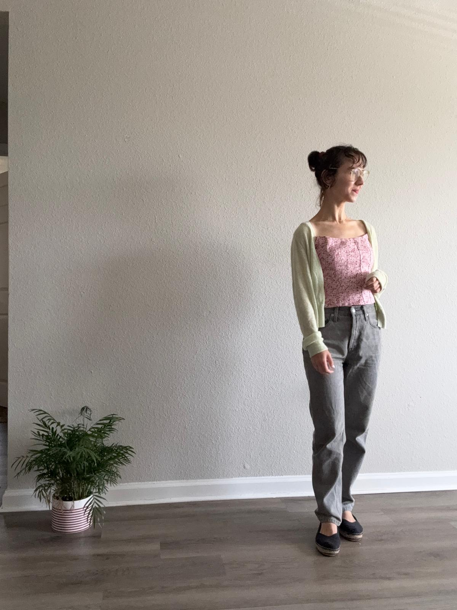

Reformation Camisole Top
This soft pink camisole is one of my most versatile pieces—perfect for layering or wearing alone. It has a vintage cut, light structure, and pairs beautifully with both romantic and relaxed styling.

Paired with straight leg gray denim, a pastel green cardigan sweater and ballet flats for a soft afternoon café mood.

Layered under a cream cardigan with tailored linen pants — polished but easeful.

Worn with wide-leg jeans and sneakers for a grounded but feminine day out.